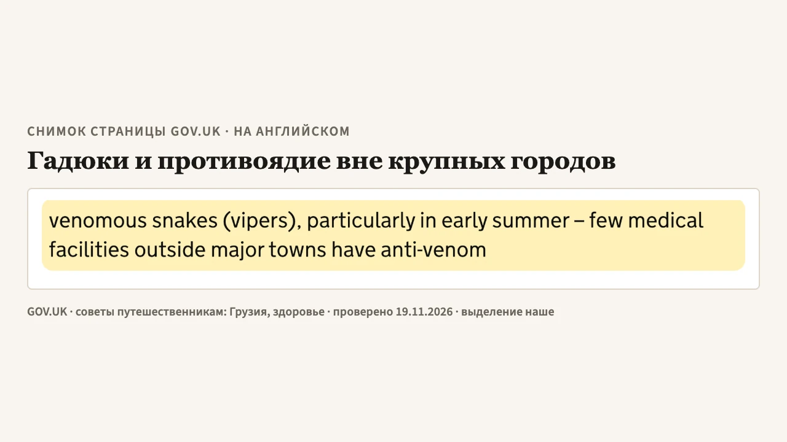

- От Тбилиси
- 60–70 км
- Основан
- VI век
- Гадюки
- начало лета
- Противоядие
- мало где вне городов
- Скорая
- 112
Статья входит в путеводитель по Грузии.
Монастырь Давид Гареджи: лавра в полупустыне
Это действующий комплекс обителей, вырубленных в сухом склоне на юго-востоке страны. По Википедии (на английском), скальный комплекс Грузинской православной церкви стоит в Кахетии, на полупустынных склонах горы Гареджа, на краю плато Иори, примерно в 60–70 км к юго-востоку от Тбилиси.
Высечен в скале. Сотни келий, церквей, часовен, трапезных и жилых помещений вырублены прямо в каменном склоне. Поэтому комплекс и называют пещерным.
Основатель. Комплекс основал в VI веке Давид Гареджийский — один из тринадцати ассирийских отцов, пришедших в Грузию. В IX веке, пишет Википедия, он вырос при Илларионе Грузине.
Расцвет. В период расцвета появились новые монастыри — Удабно, Бертубани и Чичхитури.
Разорения. В 1265 году комплекс разорило монгольское войско. В 1615 году на него напали Сефевиды, и монахов перебили.
Возрождение. Монашеская жизнь вернулась с 1690 года. Монастырь, по Википедии, действующий, а в округе обитают охраняемые виды животных.
Наш совет. У храмов говорите тише, растения и животных не трогайте. Если хотите увидеть Кахетию шире, у нас есть путеводитель по Сигнахи.

Лавра и Удабно: что увидите
Вас ждёт не одно здание, а несколько обителей на склоне. Лавра Давида Гареджи и Удабно, по Википедии, — отдельные монастыри комплекса.
Бертубани и Чичхитури. Ещё две обители, построенные, как и Удабно, в период расцвета. Бертубани стоит на границе — об этом следующий раздел.
Перед визитом. Маршрут по склону, режим работы и стоимость входа уточняйте на месте.
Одежда. GOV.UK в советах о безопасности (на английском) просит вне городов помнить о скромной одежде, особенно в храмах.
Наш совет: что надеть и взять.
- Закрытую обувь с цепкой подошвой: склон сухой, под ногами камни.
- Воду с запасом — не рассчитывайте купить её на склоне.
- Головной убор и солнцезащитный крем: почти весь путь под открытым небом.
- Длинные брюки или юбку и одежду, закрывающую плечи, — и для храмов, и для каменистой тропы.
- Держитесь натоптанной тропы.
Граница с Азербайджаном
Часть комплекса стоит на спорном участке границы. По Википедии, монастырь Бертубани находится на границе Азербайджана и Грузии и стал предметом пограничного спора между двумя странами.
Переговоры. Их ведут с 1991 года, пишет Википедия. Своей оценки спора мы не даём. Где проходит линия, не описываем: официального источника для посетителей мы не нашли.
Наш совет.
- Следуйте указателям и просьбам персонала.
- Не заходите за знаки, ограждения и барьеры.
- Не уверены, куда можно, — вернитесь и спросите.
Змеи у Давид Гареджи: гадюки и противоядие
Отдельно об этих местах источники не пишут, но лечение может быть далеко. В советах о здоровье (на английском) GOV.UK среди рисков в Грузии называет ядовитых змей — гадюк, особенно в начале лета. Там же сказано: противоядие есть лишь в немногих медучреждениях вне крупных городов.
Канада. Правительство Канады (на английском) в советах, как снизить риск болезней, просит избегать контакта с животными, в том числе со змеями.
Наш совет. Учтите до выезда: до клиники с противоядием может быть далеко, а скорой нужно время, чтобы добраться до склона.
Наш совет: как не попасть под укус.
- Смотрите под ноги, особенно на тёплых камнях и в низких кустах.
- Не суйте руки в щели и под камни.
- Надевайте закрытую обувь и длинные брюки, а не сандалии.
- Увидели змею — медленно отойдите и дайте ей уйти.


Укусила змея: первая помощь по NHS
Сразу звоните 112: при любом укусе нужна помощь врача. Так пишет NHS (на английском) и добавляет: за границей обращайтесь в местную экстренную службу. В Грузии это 112 — GOV.UK советует набрать номер и попросить скорую (по-английски ambulance).
За руль не садитесь. NHS просит не ехать в больницу самому: пусть отвезёт кто-то другой, или дождитесь скорой.
Пока ждёте помощь, NHS советует:
- сохранять спокойствие;
- держать укушенную часть тела как можно неподвижнее;
- по возможности лечь в восстановительное положение;
- от боли принять парацетамол;
- запомнить окраску и рисунок змеи или сфотографировать её — издалека и если это не опасно;
- снять украшения и ослабить одежду рядом с укусом: может появиться отёк.
Чего нельзя, по NHS:
- подходить к змее, пытаться её поймать или убить;
- отсасывать или вырезать яд;
- туго перетягивать укушенную часть тела;
- принимать аспирин или ибупрофен — они могут усилить кровотечение.
В больнице. По NHS, в британских больницах после укуса обычно оставляют не меньше чем на 24 часа, а при ядовитом укусе дают противоядие. Помните: вне крупных городов противоядие, по GOV.UK, есть мало где.
Наш совет. По телефону сначала скажите, что это укус, потом назовите место — Давид Гареджи — и где вы на склоне.
![Инфографика «Укусила змея: что делать», над заголовком строка «NHS о змеиных укусах · проверено 19.11.2026», пять пронумерованных карточек: 1 Звоните 112 — помощь врача нужна при любом укусе, сами за руль не садитесь; 2 Держите неподвижно — укушенную часть тела как можно неподвижнее, сохраняйте спокойствие; 3 Снимите украшения — и ослабьте одежду рядом с укусом, может появиться отёк; 4 Запомните змею — окраску и рисунок или фото, издалека и если это не опасно; 5 Нельзя — отсасывать или вырезать яд, туго перетягивать, пить аспирин или ибупрофен](../../assets/img/david-gareja-ru/ukus-zmei-mob.webp)
Жара, солнце и пожары
GOV.UK предупреждает о летних молниях и пожарах. Наш совет. На открытом склоне тени мало — берите головной убор.
Молнии и пожары. По GOV.UK (на английском), летом есть риск молний и пожаров, особенно в горах.
Наш совет. Не курите у сухой травы. Увидели дым — уходите с этого участка.
Наш совет: в жаркий день.
- Выходите рано утром или ближе к вечеру.
- Возьмите воду с запасом и пейте, не дожидаясь жажды.
- Не снимайте головной убор на открытом месте.
Признаки перегрева и что делать по NHS — в нашем путеводителе по Мцхете.

Как добраться до Давид Гареджи
Ехать нужно по дороге на юго-восток от столицы: по Википедии, комплекс лежит примерно в 60–70 км от Тбилиси.
Сельские дороги. Правительство Канады пишет, что в сельских районах дороги бывают грунтовыми и неровными, а на проезжей части встречается скот. Оно советует не ездить в темноте.
Машина. Для поездок в отдалённые районы GOV.UK советует машину, пригодную для бездорожья, и проверять погоду на месте.
Деньги. GOV.UK советует взять достаточно наличных лари: вне крупных городов может не быть банкоматов. Наш совет. Снимите их в Тбилиси.
Наш совет. Спросите хозяина жилья накануне, как удобнее доезжать, и выезжайте с запасом светлого времени. Скачайте офлайн-карту с отмеченной точкой комплекса и возвращайтесь на главные дороги до темноты. Как водить в Грузии — в нашем путеводителе для водителей.
Где врач
Срочно — 112, попросите скорую. Вне Тбилиси, по GOV.UK (на английском), медицинская помощь ограничена.
Сельские районы. Канада пишет, что там не хватает медикаментов и персонала, а скорая может не добраться.
Противоядие. Оно, по GOV.UK, есть лишь в немногих медучреждениях вне крупных городов.
Если не срочно. Вне Тбилиси, по GOV.UK, медпомощь ограничена, поэтому врача удобнее искать в Тбилиси. Врачи и клиники собраны в каталоге клиник Тбилиси на 100doc.ge.
Полис. Для въезда в Грузию иностранцу нужен полис с покрытием не меньше 30 000 лари — подробнее в нашем разделе о полисе для въезда.
Наш совет. Сохраните 112 в телефоне и держите заряд. Диспетчеру назовите место и дорогу, по которой приехали. Подвернули ногу на склоне — не спускайтесь в одиночку, попросите о помощи других посетителей.
Частые вопросы
Далеко ли Давид Гареджи от Тбилиси?
Примерно 60–70 км к юго-востоку, в Кахетии, по Википедии.
Есть ли там змеи?
Да. GOV.UK называет гадюк риском по всей Грузии, особенно в начале лета; отдельно о Давид Гареджи источники не пишут. Наш совет. Смотрите под ноги и не суйте руки в щели.
Что делать, если укусила змея?
Звоните 112 и не садитесь за руль сами. По NHS — держите укушенную часть тела неподвижно, сохраняйте спокойствие, по возможности лягте в восстановительное положение, от боли примите парацетамол. Нельзя отсасывать или вырезать яд, туго перетягивать, пить аспирин или ибупрофен.
Что с границей с Азербайджаном?
Часть комплекса — монастырь Бертубани — стоит на границе Азербайджана и Грузии и стала предметом спора; переговоры идут с 1991 года, пишет Википедия. На месте следуйте указаниям и не заходите за знаки и барьеры.
Есть ли рядом больница?
Вне Тбилиси помощь ограничена, пишет GOV.UK, а противоядие есть лишь в немногих медучреждениях вне крупных городов. Срочно — 112.
Что такое Удабно?
Один из монастырей комплекса, построенный в период его расцвета, по Википедии. Другая обитель комплекса — Лавра.
Как одеться для поездки?
Скромно: GOV.UK просит помнить о скромной одежде вне городов, особенно в храмах. Для склона — закрытая обувь, головной убор и вода.
Источники
- Википедия: скальный комплекс в Кахетии — расположение, основание, Бертубани и граница (вторичный источник) (на английском)
- GOV.UK: Health — риски для здоровья, противоядие, медпомощь вне Тбилиси, 112 (на английском)
- GOV.UK: Safety and security — одежда, банкоматы, бездорожье, молнии и пожары (на английском)
- Правительство Канады: сельские дороги, контакт с животными, медицина в сёлах (на английском)
- NHS: Snake bites — что делать при укусе и чего нельзя, страница проверена 17 июля 2026 года (на английском)
Это справочная информация, а не медицинская консультация: решение о лечении принимает врач. Что открыто на месте, уточняйте там же. Проверено 19 ноября 2026 года.